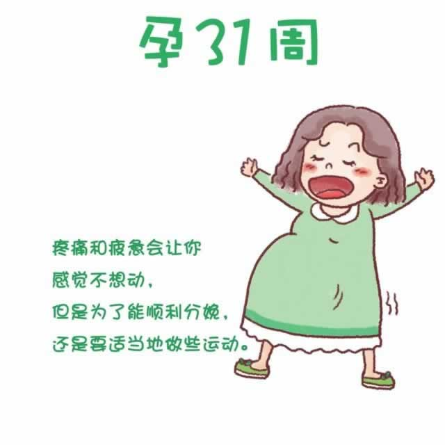

现在，你身体内的血容量与怀孕前相比增加了40%-50%，宝宝和你都在为生产做着最后的冲刺。因为腹部的重量改变了体型和身体重心，韧带在激素的作用下变得更加松弛，所以下背部和腿部疼痛会有所加剧。此时要尽量避免长时间站立或坐着。睡觉时采取左侧位睡姿，在弯腰举物时需格外小心，放慢速度。如果出现剧烈疼痛或麻木的感觉，一定要去医院就诊。你的胃部还是经常会感觉不适，食欲有所下降。
虽然此时的身体十分疲惫，但为了顺利分娩，还需坚持适当地做些运动。如果你还在工作，也最好能保证每天1小时左右的午睡。要知道，充分的睡眠和休息会让宝宝更加健康地成长和发育。